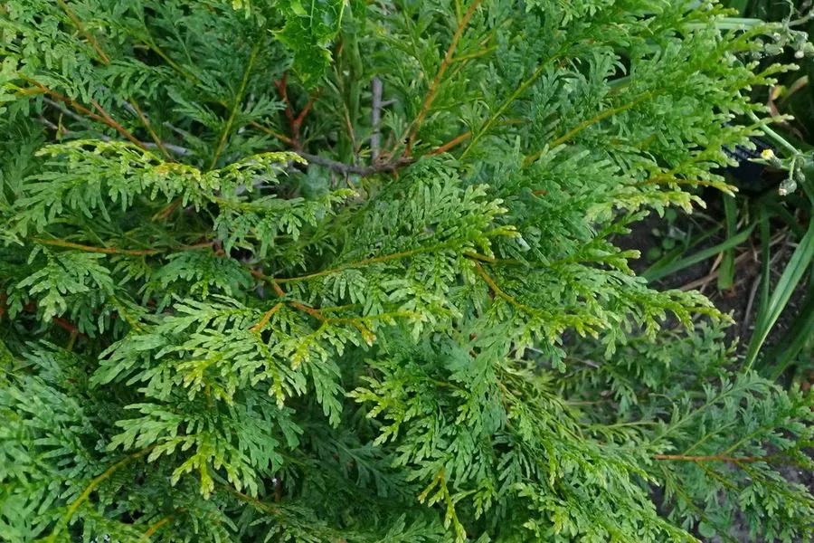

乔木 · 植物界
翠柏 Calocedrus macrolepis

柏科翠柏属常绿乔木，鳞叶翠绿、小枝扁平，木材芳香耐腐，是南方珍贵的用材与风景树种，被列为国家二级保护植物。
- 分类
- 门裸子植物门纲松纲目松柏目科柏科属翠柏属
- 栖息环境
- 海拔 1000–2000 米的山地常绿阔叶林，喜温暖湿润、阳光充足
- 地理分布
- 中国云南、贵州、广西、海南；越南、缅甸
- 保护级别
- 国家二级重点保护野生植物；IUCN 暂无评估
物种志
翠柏为柏科翠柏属常绿乔木，高十五至三十米，树皮灰褐色、纵裂，树冠幼时尖塔形、老时广圆形。小枝扁平，鳞叶交叉对生，中央鳞叶扁平，两侧鳞叶较大并包裹小枝，叶色翠绿。雌雄同株，球花单生枝顶，花期三至四月；球果长圆形，成熟时红褐色，种鳞三对、木质，果期十至十一月。
翠柏分布于云南、贵州、广西、海南等地，越南、缅甸也有，多生于海拔一千至两千米的山地常绿阔叶林中。它喜温暖湿润和充足阳光，适宜深厚肥沃、排水良好的酸性土壤，生长较慢。木材纹理直、结构细、具芳香气味且耐腐，是建筑、家具、文具和工艺品的上等用材；树冠翠绿常青，也可作风景树。由于天然资源逐渐减少，被列为国家二级重点保护野生植物。
形态与习性
- 株高15–30 m，树冠广圆形
- 花期3–4 月，球花单生枝顶
- 果期10–11 月，球果红褐色
- 光照喜光，幼树稍耐阴
- 水分喜湿润，不耐干旱
- 土壤深厚肥沃的酸性壤土
- 主要用途建筑、家具、文具用材
趣味知识
- 翠柏木材有清香，刨面纹理美观，云南民间常用它制作箱柜和文具。
- 它的鳞叶小而翠绿，小枝扁平如羽，是柏科中姿态秀丽的种类。
- 翠柏生长缓慢，大径材需要上百年才能形成，野生资源已不多。